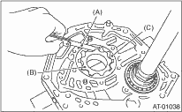
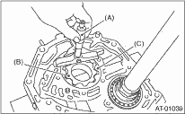

1. Check the seal ring and oil seal for breaks and damage.
2. Check other parts for dents or faults.
3. Oil pump rotor assembly selection
(1) Tip clearance
Install the oil pump inner rotor and outer rotor to the oil pump. With rotor gears facing each other, measure the crest-to-crest clearance.
Tip clearance:
0.02 — 0.15 mm (0.0008 — 0.0059 in)

|
(A) |
Thickness gauge |
|
(B) |
Oil pump rotor inner rotor |
|
(C) |
Oil pump outer rotor |
(2) Side clearance
Set a depth gauge to the oil pump housing, then measure the oil pump housing-to-oil pump rotor clearance.
Side clearance:
0.02 — 0.04 mm (0.0008 — 0.0016 in)

|
(A) |
Depth gauge |
|
(B) |
Oil pump rotor inner rotor |
|
(C) |
Oil pump outer rotor |
(3) If the depth and side clearance are out of specification, replace the oil pump rotor assembly.
|
Oil pump rotor assembly | |
|
Part number |
Thickness mm (in) |
|
15008AA060 |
11.37 — 11.38 (0.4476 — 0.4480) |
|
15008AA070 |
11.38 — 11.39 (0.4480 — 0.4484) |
|
15008AA080 |
11.39 — 11.40 (0.4484 — 0.4488) |
Inspect the total end play, and adjust it to be within the standard value.